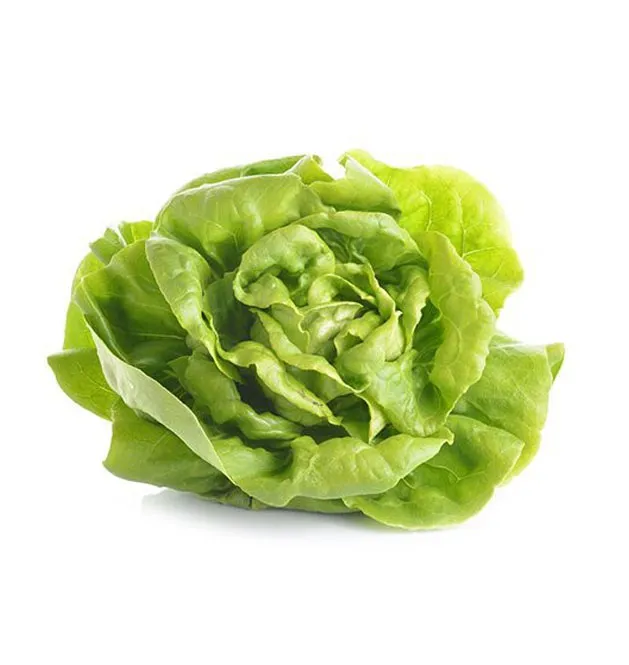
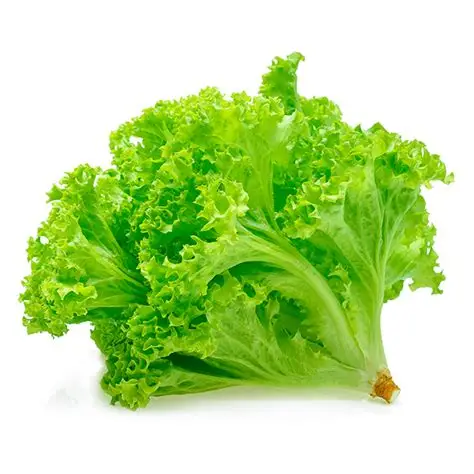

A alface pode ser cultivada com uma lâmpada Pink Farm,
que substitui a luz do Sol. Ela emite luz azul e vermelha,
essenciais para a fotossíntese. A luz azul fortalece as folhas e as raízes,
enquanto a luz vermelha acelera o crescimento da planta. Com água, nutrientes
e cerca de 14 a 16 horas de iluminação por dia, a alface passa pelas fases de
germinação, crescimento e desenvolvimento das folhas,
ficando pronta para a colheita em aproximadamente 30 a 45 dias.
alface Lisa

A alface lisa possui folhas grandes, macias e com bordas lisas.
Sua textura é mais delicada e o sabor é suave.
É muito utilizada em saladas, sanduíches e lanches,
mas deve ser consumida rapidamente após a colheita, pois murcha com mais facilidade
Alface Crespa

A alface crespa apresenta folhas bem recortadas e onduladas, formando uma aparência mais volumosa.
Tem textura mais crocante e é mais resistente ao transporte e ao armazenamento.
É uma das variedades mais consumidas no Brasil, sendo muito usada em saladas por manter a crocância por mais tempo.